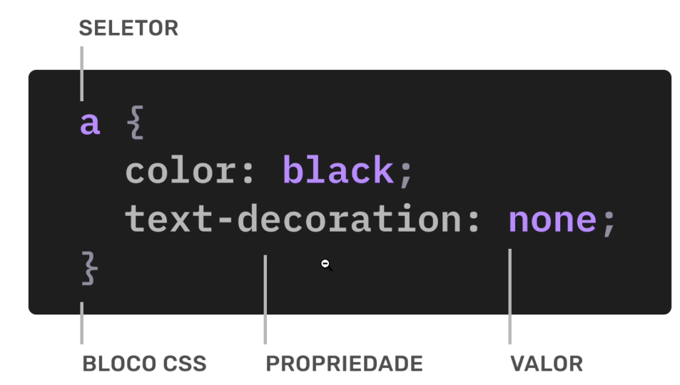

Introdução
Como funciona?
Basicamente o CSS é composto de seletores e declarações. Os seletores são usados para identificar os elementos a serem selecionados e estilizados. As declarações são usadas para definir as propriedades de estilização que serão aplicadas aos elementos selecionados. 
Principais Propriedades de Estilização CSS
Existem várias propriedades de estilização disponíveis no CSS que podem ser usadas para alterar a aparência de um elemento na página. Abaixo estão listadas algumas das principais propriedades de estilização do CSS.
| Propriedade CSS | Descrição | Exemplo de Estilização |
|---|---|---|
color |
Define a cor do texto. Pode ser usado com valores como nomes de cores, códigos hexadecimais, RGB e HSL. |
color: #3498db;
color: rgb(52, 152, 219);
color: hsl(207, 70%, 53%);
|
background-color |
Define a cor de fundo de um elemento, que pode cobrir todo o conteúdo ou apenas uma parte específica dependendo de outras propriedades. |
background-color: #f9f9f9;
background-color: rgba(0, 0, 0, 0.1);
|
font-size |
Define o tamanho do texto. Pode ser definido em unidades relativas (como em ou %) ou absolutas (como px). |
font-size: 16px;
font-size: 1.2em;
font-size: 150%;
|
padding |
Define o espaço interno ao redor do conteúdo de um elemento, afetando a distância entre o conteúdo e as bordas do elemento. |
padding: 10px;
padding: 10px 20px;
padding: 5px 10px 15px 20px;
|
margin |
Define o espaço externo ao redor de um elemento, afetando a distância entre o elemento e seus vizinhos. |
margin: 15px;
margin: 10px 20px;
margin: 5px 10px 15px 20px;
|
border-radius |
Arredonda as bordas de um elemento. Pode ser usado para círculos ou formas ovais. |
border-radius: 8px;
border-radius: 50%;
(círculo)
|
box-shadow |
Adiciona uma sombra ao redor de um elemento. Os valores definem a posição horizontal, vertical, desfoque, extensão e cor da sombra. |
box-shadow: 0 4px 8px rgba(0, 0, 0,
0.2);
box-shadow: 2px 2px 5px #ccc, -2px -2px
5px #eee;
(sombra dupla)
|
text-align |
Define o alinhamento do texto dentro de um elemento. |
text-align: center;
text-align: right;
text-align: justify;
|
display |
Determina como um elemento será exibido no layout, como block, inline, flex, ou grid. |
display: block;
display: inline;
display: flex;
|
position |
Define o método de posicionamento de um elemento na página, como relativo, absoluto ou fixo. |
position: relative;
position: absolute;
position: fixed;
|
flex |
Configura elementos flexíveis para uso em layouts flexbox. |
flex: 1;
flex: 2 1 0;
|
Seletores
Os seletores são usados para identificar os elementos a serem selecionados e estilizados. Existem vários tipos de seletores que podem ser usados para selecionar elementos com base em seu tipo, classe, ID, atributos, estado e muito mais.
| Seletor | Descrição | Exemplo |
|---|---|---|
* |
Seleciona todos os elementos da página. |
* { color: red; }
|
elemento |
Seleciona todos os elementos com o nome do elemento especificado. |
p { font-size: 16px; }
|
.classe |
Seleciona todos os elementos com a classe especificada. |
.destaque { color: yellow; }
|
#id |
Seleciona o elemento com o ID especificado. |
#principal { font-weight: bold; }
|
elemento, elemento |
Seleciona todos os elementos que correspondem a qualquer um dos seletores especificados. |
h1, h2 { color: blue; }
|
elemento elemento |
Seleciona um elemento filho de outro elemento. |
div p { margin: 10px; }
|
elemento > elemento |
Seleciona um elemento filho direto de outro elemento. |
div > p { padding: 5px; }
|
elemento + elemento |
Seleciona o elemento irmão imediatamente posterior a outro elemento. |
p + p { margin-top: 20px; }
|
elemento ~ elemento |
Seleciona todos os elementos irmãos posteriores a outro elemento. |
p ~ p { margin-top: 20px; }
|
Cores
No CSS as cores podem ser definidas de várias maneiras. As cores podem ser especificadas por nome, código hexadecimal, RGB, RGBA, HSL e HSLA. Dentre as opções disponíveis as mais comuns são as cores por nome e código hexadecimal. É possível definir as cores de vários elementos da página, como texto, fundo, bordas, sombras, entre outros. Abaixo serão apresentadas as diferentes formas de definir cores no CSS.
| Forma de Definição | Descrição | Exemplo |
|---|---|---|
| Nome | Define a cor por um nome específico. |
color: red;
background-color: blue;
|
| Código Hexadecimal | Define a cor por um código hexadecimal de 6 dígitos. |
color: #3498db;
background-color: #f9f9f9;
|
| RGB | Define a cor por valores de vermelho, verde e azul. |
color: rgb(52, 152, 219);
background-color: rgb(249, 249, 249);
|
| RGBA | Define a cor por valores de vermelho, verde, azul e transparência. |
color: rgba(52, 152, 219, 0.8);
background-color: rgba(0, 0, 0, 0.1);
|
| HSL | Define a cor por valores de matiz, saturação e luminosidade. |
color: hsl(207, 70%, 53%);
background-color: hsl(0, 0%, 98%);
|
| HSLA | Define a cor por valores de matiz, saturação, luminosidade e transparência. |
color: hsla(207, 70%, 53%, 0.8);
background-color: hsla(0, 0%, 0%, 0.1);
|
| Palavras-chave | Define a cor por palavras-chave como transparent, currentColor, inherit, initial, revert e unset. |
color: transparent;
color: currentColor;
|
Box Model
O Box Model é um conceito fundamental do CSS que define a estrutura de um elemento na página. Cada elemento é representado por uma caixa retangular que consiste em conteúdo, preenchimento, borda e margem. O conteúdo é a área onde o texto e outros elementos são exibidos. O preenchimento é a área entre o conteúdo e a borda. A borda é a área ao redor do elemento. A margem é a área entre o elemento e seus vizinhos. Na tabela abaixo é possível visualizar os valores que podem ser aplicados a cada parte do Box Model.
| Parte | Descrição | Exemplo |
|---|---|---|
| Conteúdo | Área onde o texto e outros elementos são exibidos. |
width: 200px;
height: 100px;
|
| Preenchimento | Área entre o conteúdo e a borda. |
padding: 10px;
padding: 10px 20px;
padding: 5px 10px 15px 20px;
|
| Borda | Área ao redor do elemento. |
border: 1px solid #ccc;
border-radius: 8px;
|
| Margem | Área entre o elemento e seus vizinhos. |
margin: 15px;
margin: 10px 20px;
margin: 5px 10px 15px 20px;
|
| Box Sizing | Define como o tamanho total de um elemento é calculado. |
box-sizing: content-box;
box-sizing: border-box;
|
| Overflow | Define o comportamento do conteúdo que transborda a caixa do elemento. |
overflow: hidden;
overflow: scroll;
|
| Visibility | Define a visibilidade de um elemento. |
visibility: visible;
visibility: hidden;
|
| Clip Path | Define uma área de recorte para um elemento. |
clip-path: circle(50%);
clip-path: polygon(0 0, 100% 0, 100% 100%, 0 100%);
|
| Outline | Define uma linha ao redor de um elemento. |
outline: 2px solid red;
|
Ilustração do Box Model

Essa imagem corresponde a uma ilustração de como funciona um box-model na prática.